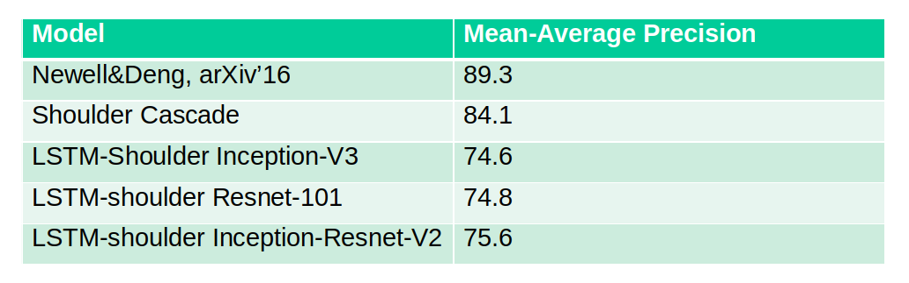

Shoulder Keypoint Detection from Object Detection
| Prince Kapoor, Robert Laganiere University of Ottawa Ottawa, ON, Canada |
Daniel Laroche, Changyun Zhu, Xiaoyin Xu, Ali Ors NXP Semiconductors Ottawa, ON, Canada |
|---|---|
| Questions? Drop us a line | |
Overview
Shoulder keypoint detection from object detection is a research strategy to detect shoulder keypoints and object in computationally less expensive methodology with efficient accuracy. We had introduced two methodology by which shoulder keypoints can be detected after detection of objects described as follows:
- First is the use of external cascade network for detecting shoulder keypoints.
- The detection from object detection model act as input to a cascade network which had been trained for detecting shoulder keypoints as explained in figure below:
- Second method is amending the object detection model.
- Using the same feature maps which are trained for object detection are made to fine-tuned to detect shoulder keypoints as well.
- This methodology is explained in figure below:
This work was accepted as a part of Master's Thesis in University of Ottawa. The first methodology, that is, shoulder keypoint detection using cascade network is also presented in UOttawa Graduate Poster Competition-2018 which helps in attaining efficient accuracy and speed for realtime ADAS applications.
Click here for more
Demos
The following is a video and example image of our model applied to an unseen video sequence. The sequence has been tested on Caltech-USA pedestrian dataset as well as video sequence captured around University of Ottawa Campus. The object detection model was constructed using the Caltech-USA Pedestrian training set, and has never seen snow, winter jackets or hats. For best viewing, use the "Full Screen" option at the bottom right of the video.
Additional examples outputs from different sequences and datasets is shown below:
Results
We evaluated our shoulder keypoints model architectures on MPII Human Pose test dataset. The Mean Average Precision (mAP) is reported in table below:

From table, it had been concluded that our best model architecture(that is, Shoulder Cascade) had achieved a comparable accuracy with state-of-the-art model architecture whereas, there is significant decline in the accuracy of LSTM-Shoulder based model architectures. We tried to explore the reason for this downtrend and it is found in LSTM-decoder model architecture itself. LSTM-decoder is made to perform prediction at a particular scale (here, each grid cell’s size is 32x32 pixel value). So, when LSTM-decoder predict head on large-scale images then, LSTM-decoder successfully predict head but the grid cells doesn’t get aligned with grid cells for shoulder keypoints. An example of this case is shown in figure below: